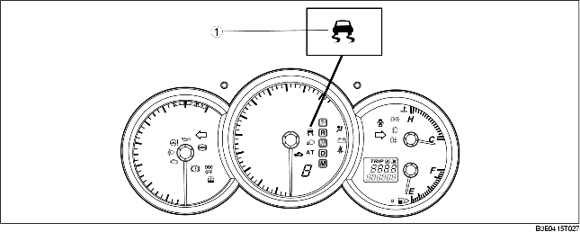

• When the DSC and CAN lines are normal, the DSC indicator light illuminates for approx. 3.0 s when the ignition switch is turned to the ON position to check the light function. When the system is malfunctioning, the DSC indicator light remains illuminated.
• When the DSC or TCS is operating (DSC has not been disabled by pressing the DSC OFF switch), the DSC indicator light operates as follows:
|
Item |
DSC indicator light
|
|
TCS, DSC not operating |
Not illuminated
|
|
TCS operating |
Flashes (0.5 s intervals)
|
|
DSC operating |
|
|
TCS, DSC system malfunction |
Illuminated
|

.